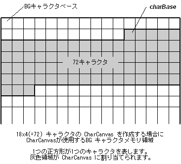

#include <nnsys/g2d/g2d_CharCanvas.h>
void NNS_G2dCharCanvasInitForBG(
NNSG2dCharCanvas* pCC,
void* charBase,
int areaWidth,
int areaHeight,
NNSG2dCharaColorMode colorMode
);| pCC | [OUT] CharCanvas へのポインタ |
| charBase | [IN] CharCanvas に割り当てるキャラクタの始点へのポインタ。4バイトアライメントされていなければなりません。 |
| areaWidth | [IN] CharCanvas の水平方向キャラクタ数 |
| areaHeight | [IN] CharCanvas の垂直方向キャラクタ数 |
| colorMode | [IN] 対象 BG のカラーモード |
なし。
キャラクタBG面上に CharCanvas を構築するように NNSG2dCharCanvas 構造体を初期化します。
この関数では構築された CharCanvas は charBase から
areaWidth * areaHeight 個のキャラクタを
CharCanvas に割り当てられたものとして扱います。
アフィンBGでは最大256個、
テキストBGとアフィン拡張BGでは最大1024個のキャラクタ数制限があることに注意してください。

colorMode には以下のいずれかの値を指定します。
| NNS_G2D_CHARA_COLORMODE_16 | 16色カラーのキャラクタを使用します。 |
| NNS_G2D_CHARA_COLORMODE_256 | 256色カラーのキャラクタを使用します。 |
const int width = 24;
const int height = 8;
const int offset = 0x40;
NNSG2dCharCanvas cc;
GXCharFmt16* pCharBase = (GXCharFmt16*)G2_GetBG0CharPtr();
// メイン BG0 のキャラクタで CharCanvas を構築します。
NNS_G2dCharCanvasInitForBG(
&cc, //
pCharBase + offset // キャラクタベースからoffset 番目のキャラクタを基点に
width, // width * height 個のキャラクタで CharCanvas を
height, // 構築します。
NNS_G2D_CHARA_COLORMODE_16 //
);
2007/01/11 第5引数の型が NNSG2dColorMode になっていたのを NNSG2dCharaColorMode に修正
2005/09/29 引数のIN/OUT表示を修正
2005/05/25 初版